A typical calculation for the wave function of a group of terms, is:
Each stage in this sequence is considered an application. In order to simplify the dynamic memory allocation, each stage outputs information about the problem and its size to a file so that the next stage has the crucial information for memory allocation. This chapter of the document describes the steps for performing transition calculations with atsp2K and a number of other atomic properties. The N-like electronic sequence is described as an example.
The calculation starts with generating the configuration state functions
using lsgen and lsreduce, which are explained in  ,
and
,
and  .
The first choice is the decision of the model to be used for
generating expansions. In this example, the wave function expansions
were obtained from orbital sets of increasing size characterized by
their maximum quantum number. For orbital sets with 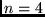 or 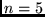, these
were obtained, by single (S) and double (D) excitations from a
multi-reference set, treating 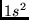 as a common closed core. The
multi-reference set contained all configurations
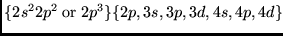 and
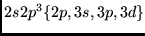. Only those configuration states from SD
excitations which interacted with at least one member of the multi-reference
set were retained. To these expansions
were added all configuration states of the form
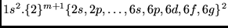 at the 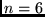 stage and then
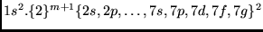 at the 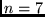 stage.
In this notation 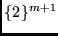 implies any combination of 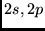 orbitals
which, when coupled to two of the orbitals in the last orbital set,
yields the required term and parity. All configuration files, including
the multi-reference sets are located in the directory atsp2K/files_c.
The configuration lists have *.c suffix, the reference lists are
prefixed with mrlist.
.
The first choice is the decision of the model to be used for
generating expansions. In this example, the wave function expansions
were obtained from orbital sets of increasing size characterized by
their maximum quantum number. For orbital sets with 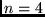 or 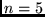, these
were obtained, by single (S) and double (D) excitations from a
multi-reference set, treating 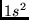 as a common closed core. The
multi-reference set contained all configurations
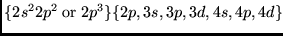 and
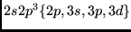. Only those configuration states from SD
excitations which interacted with at least one member of the multi-reference
set were retained. To these expansions
were added all configuration states of the form
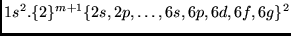 at the 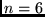 stage and then
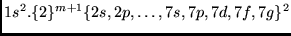 at the 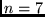 stage.
In this notation 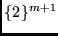 implies any combination of 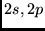 orbitals
which, when coupled to two of the orbitals in the last orbital set,
yields the required term and parity. All configuration files, including
the multi-reference sets are located in the directory atsp2K/files_c.
The configuration lists have *.c suffix, the reference lists are
prefixed with mrlist.
| N-like | |||||
| Config. | Terms | ||||
| Even | |||||
| First Group: E1 | |||||
| 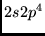 | 2 S /, 2 P /, 2 S /, 4 P / | ||||
| Second Group: E2 | |||||
| 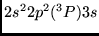 | 2 P /, 2 D /, 4 P / | ||||
| 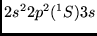 | 2 S / | ||||
| Third Group: E3 | |||||
| 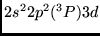 | 2 P /, 2 D /, 2 F /, 4 P /, 4 D /, 4 F / | ||||
|
|
2 S /,2 P /,2 D /,2 F /,2 G / | ||||
| 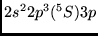 | 4 P / | ||||
| 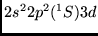 | 2 D / | ||||
| Odd | |||||
| First Group: O1 | |||||
| 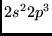 | 2 P /, 2 D /, 4 P / | ||||
| Second Group: O2 | |||||
| 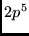 | 2 P / | ||||
| Third Group: O3 | |||||
| 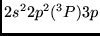 | 2 S /, 2 P /, 2 D /, 4 S /, 4 P /, 4 D / | ||||
| 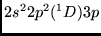 | 2 P /, 2 D /, 2 F / | ||||
| 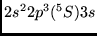 | 4 S / | ||||
| 2 P / | |||||
This example demonstrates the computational steps for the first Even (E1), or 2 S /, 2 P /, 2 S / and 4 P / from and first odd groups (O1), or 2 P /, 2 D / and 4 P / from . They cover only the beginning of the spectra of O II and F III, however it is easy to extend the calculation for higher Z by modifying the included scripts, sh_mchf_E1 and sh_mchf_O1. To extend the spectra, the scripts need to be modified by including the terms according to 2.1.
| 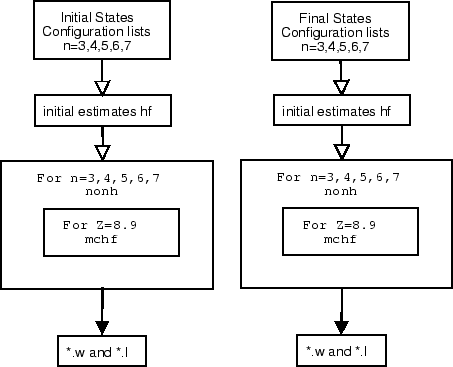 |
Normally, an mchf calculation starts at n=3. In order to start the calculation with good initial estimates, an average energy Hartree-Fock calculation is performed. Providing initial estimates for n=3 from hf is an optional but a worthwhile step to ensure good initial estimates for the correlation calculation. The script below shows a way of using the hf program, the comments on the right side explain the expected input:
set -x
# this script runs the Hartree-Fock program and for average energies
# and saves the output wave function file in E1.${Z}_2.w, which
# will be used as initial estimates at n=3 for the mchf calculation
# the file shows runs for Z=8,9, for different Z the line below
# should be modified:
for Z in 8 9 #10 11 12 13 14 15 16 17
do
(echo
rm wfn.inp
${ATSP}/bin/hf <<EOF
N,AV,${Z} # Atom label, Average energy, Atomic number
1s # closed shells
2s(1)2p(4) # electrons outside closed shells
all # optimize on all orbitals
y # default electron parameters
y # default remaining parameters
n #
n
EOF
mv wfn.out E1.${Z}_2.w) # wfn.out is moved
done
rm *log
The script demonstrates the hf calculation only for Z=8,9, however, it is easily extendible for higher Z. By default hf saves the resulting wave function in a file wfn.out and the script further renames it to incorporate the group and atomic number in the file name. Since this file is used as initial estimate for mchf at n=3, it is convenient to use number 2 in the file name (the mchf script starts at n=3 and expects an initial estimate from n=2).
When a range of mchf calculations is desired, it is convenient to encode the algorithm shown in Figure 2.2 into a shell script. In this case, the calculations for n=3,4,5,6,... and for the desired set of atomic numbers Z=8,9,... are included. The script starts with assigning values for terms, eigenvalues, optimization of orbitals and other parameters as required by mchf. Note that the main loop is over each n and the internal loop for a given n is over each Z. The script assumes all files are in the current directory, except the configuration lists for the terms. They are common to all groups and are located in a separate directory, file_c. An expansion for a given term has the name LSn.c. For example, the expansion for 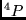 and n=3 has been saved in the file files_c/4P3.c. In order to avoid name conflicts with even terms with the same LS, the odd parity is denoted as "o" in the file name (4Po3.c). A script like the above assumes calculations are robust, that no errors are encountered. The user should inspect the output for potential errors.
set -x
# Variables $a, $b, $c and $d correspond to the configuration
# expansions for the 2s.2p(4)3P2 states, which are simultaneously
# optimized and the group is named E1
a=2S;
b=2P;
c=2D;
d=4P;
# the variable $o is used to include the parity in the file names saved
# for further reference
o=
#the variables below are set equal to a string with the
#desired eigenvalue and in a parenthesis the value of the
#weights, note that the eigenvalues for a given term
#are separated by comas. Example: EIG1='1(1.0),3(0.3),4(1.0)'
EIG1='1(1.0)';
EIG2='1(1.0)';
EIG3='1(1.0)';
EIG4='1(1.0)';
# the variable $s refers to the name of the states E1 (Even, 1-st group)
s=E1;
# variable n; f desired the calculation can be extended
# up to n=7 by erasing the '#' character, configuration files are
# provided
for n in 3 4 #5 6 7
do
(echo
cat \
../files_c/${a}${n}.c \
../files_c/${b}${n}.c \
../files_c/${c}${n}.c \
../files_c/${d}${n}.c \
> cfg.inp;
cp cfg.inp E${n}.c # Make a copy of the configuration file
#run nonh
${ATSP}/bin/nonh
# select orbitals to optimize and n iterations as a function of n
# for example at n=4, 1s is kept fixed, n=5 1s,2s,2p are fixed etc.
case $n in
3) ORB=all; NEW=all;;
4) ORB==9; NEW==4;;
5) ORB==12; NEW==5;;
6) ORB==14; NEW==5;;
7) ORB==19; NEW==5;;
esac
#delete previous wfn.inp files
rm wfn.inp
# the line below is used to assign the variable $previous_n=n-1
# this variable is used to copy the wave function at n-1 to file
# wfn.inp used as initial estimates at n
previous_n=`expr $n - 1`;
#for each atomic number optimize the energy functional with mchf
#here only Z=8 and Z=9 will be processed, the same procedure is
#valid for the entire sequence
for nat in 8 9
do
(echo
#use the wave function file at n-1 for initial estimates
cp ${s}.${nat}_${previous_n}.w wfn.inp;
${ATSP}/bin/mchf > out_${s}.${Z}-${n} << EOF
Z=${nat}, ${nat}.
${EIG1} # eigenvalues for term a
${EIG2} # eigenvalues for term b
${EIG3} # eigenvalues for term c
${EIG4} # eigenvalues for term d
${ORB} # orbitals which will be optimized
1s,2s,2p # spectroscopic orbitals
y # default electron parameters
n # not default other parameters (iterations, etc)
y # default values of
n # non-default values of the convergence criteria
F,10E-9,10E-9 # convergence criteria
n # non-default number of scf iterations (default is 200)
2000,0 # number of iterations
y # default other parameters.
EOF
# save all LSn.l files to unique names, not to be overwritten at next n, Z
mv ${a}.l ${a}1.${nat}_${n}.l;
mv ${b}.l ${b}1.${nat}_${n}.l;
mv ${c}.l ${c}1.${nat}_${n}.l;
mv ${d}.l ${d}1.${nat}_${n}.l;
# save the file summry which gives some wave functions computed parameters
mv summry ${d}1.${nat}_${n}.s;
# save wfn.out, the computed wave function with a unique file name
mv wfn.out ${s}.${nat}_${n}.w;)
done;)
done;
# remove not needed files
rm *lst* fort* *log summry wfn* cfg* ??.l
The script utilizes nonh and mchf, but it is preferable to look upon the needs and I/O data separately for each one.
nonh requires cfg.inp to be present in the current working directory. All parameters in nonh are default. The only input file is cfg.inp, which is required. While processing the configuration lists, nonh prints out important reference information which can be used to detect possible errors or deviations from the desired procedures: number of orbitals, number of closed shells, number of integrals, number of configurations. The same information is repeated for each term. nonh can be run interactively without providing any input:
%nonhThus, the output of correctly running nonh (at n=4) is similar to:
%nonh
input file is cfg.inp ...
===============================
N O N H 2000
===============================
THERE ARE 9 ORBITALS AS FOLLOWS:
2s 2p 3s 3p 3d 4s 4p 4d 4f
THERE ARE 1 CLOSED SUBSHELLS COMMON TO ALL CONFIGURATIONS AS FOLLOWS:
1s
Allocating space for 1054 integrals
processing 2P with 872 configurations
jb = 100
jb = 200
jb = 300
jb = 400
jb = 500
jb = 600
jb = 700
jb = 800
95818 non-zero matrix elements
10959 NF 23905 NG 204934 NR 8481 NL
248279 Total number of integrals
processing 2D with 888 configurations
jb = 100
jb = 200
jb = 300
jb = 400
jb = 500
jb = 600
jb = 700
jb = 800
103833 non-zero matrix elements
11940 NF 28320 NG 223283 NR 8557 NL
272100 Total number of integrals
processing 4S with 243 configurations
jb = 100
jb = 200
10211 non-zero matrix elements
2575 NF 3623 NG 23286 NR 1731 NL
31215 Total number of integrals
end-of-file clist!!!
After a successful completion nonh will have created the following files (Note the presence of ih.01.lst, ih.02.lst and ih.03.lst, which correspond to 2P, 2D, 4S, in the order they occurred in cfg.inp.
-rw-r--r-- 1 georgio georgio 252 Sep 20 00:35 cfg.h -rw-r--r-- 1 georgio georgio 114019 Sep 20 00:34 cfg.inp -rw-r--r-- 1 georgio georgio 6619380 Sep 20 00:35 c.lst -rw-r--r-- 1 georgio georgio 863484 Sep 20 00:35 ico.lst -rw-r--r-- 1 georgio georgio 393736 Sep 20 00:35 ih.01.lst -rw-r--r-- 1 georgio georgio 425988 Sep 20 00:35 ih.02.lst -rw-r--r-- 1 georgio georgio 43760 Sep 20 00:35 ih.03.lst -rw-r--r-- 1 georgio georgio 16760 Sep 20 00:35 yint.lst
cfg.h is a text file which provides information pertaining to the expansions for each term found in the list and it is used by mchf for memory allocation and initialization and it records a number of parameters (discussed in 13.16):
1 Closed Shells: 1s 9 Other Orbitals: 2s 2p 3s 3p 3d 4s 4p 4d 4f 3 1054 30000 snonh 2P 872 95818 248279 370 2D 888 103833 272100 400 4S 243 10211 31215 124
yint.lst is a binary file that has global information about the expansions. c.lst has the coefficients and integrals needed for the energy expression and the generation of the interaction matrix. ih.#n.lst is also a binary file, it records the row index of a matrix element. The user can find the description of the format of each file in Chapter 13.16.
After nonh, mchf continues with computing the radial wave functions. Step wise mchf calculations with respect to n and good initial estimates are one of the most important factors for correct results and faster convergence of mchf calculations. The wave function at n-1 is used as an optional initial estimate and it is copied into wfn.inp. mchf reads wfn.inp provided that it is present in the current working directory. The script must have a consistent way to refer each needed file and to save results from each n and Z step into a unique file. After converging mchf saves the output wave function by default to wfn.out, and further, the scripts renames it to a file with name comprised by the name of the group, Z and n. In addition to the wave function saved in file wfn.out, the eigenvectors are computed and saved in LS.l files by default, which the script renames to a unique file name from a combination of LS term, Z and n information.
The user is responsible for providing correct initial estimate of the wave function. This becomes more difficult for runs covering multiple n and Z. Shell scripts should be prepared with care. Correct shell makes the calculation easier and reduce the error, however, they may propagate multiple errors.
In interactive mode the user must provide a number of parameters (the expected input is shown on lines starting with ''):
=======================
M C H F ... 2000
=======================
THE DIMENSIONS FOR THE CURRENT VERSION ARE:
NWD= 60 NO=220 Lagrange Multipliers=800
START OF CASE
=============
ATOM, Z in FORMAT(A, F) :
cfg.inp has configurations for 4 terms
Enter eigenvalues and weights: one line per term, eigenvalues with weights
in parenthesis and separated by commas, default is 1.0
2S
2P
2D
4P
There are 10 orbitals as follows:
1s 2s 2p 3s 3p 3d 4s 4p 4d 4f
Enter orbitals to be varied: (ALL,NONE,SOME,NIT=,comma delimited list)
>=9
Enter those that are spectroscopic
>1s,2s,2p
Default electron parameters ? (Y/N)
>y # normally yes
Default values for other parameters? (Y/N)
>n # the answer no opens a dialog for which parameters to modify
Default values (NO,REL,STRONG) ? (Y/N)
>y #
Z=9 9. 220 10 9 0 F
Default values for PRINT, CFGTOL, SCFTOL ? (Y/N)
>y
Input free FORMAT(L, F, F)
>F,10E-9,10E-9 #convergence criteria, default is 10E-9
Default values for NSCF, IC ? (Y/N)
>n
Input free FORMAT(I, I)
>1000, 0 #by default mchf makes only 200, larger may be needed
Default values for ACFG,LD,TRACE? (Y/N)
>>> MEMORY AND DISK USE: <<<
ALL IN MEMORY : c.lst ih ico hmx
>>> END MEMORY AND DISK USE<<<
DeltaE = -96.71221392604600 Sum_Energy = -96.71221392604600
DeltaE = -1.3491365617298356E-002 Sum_Energy = -96.72570529166330
DeltaE = -1.5615602415124386E-003 Sum_Energy = -96.72726685190482
DeltaE = -6.3982817178498408E-004 Sum_Energy = -96.72790668007660
DeltaE = -3.5633507930299402E-004 Sum_Energy = -96.72826301515590
DeltaE = -1.9477728162087260E-004 Sum_Energy = -96.72845779243752
...
...
...
DeltaE = -1.0284111340297386E-008 Sum_Energy = -96.72916623947961
740 iterations, output written to wfn.out
DeltaE = -1.0245514658890897E-008 Sum_Energy = -96.72916624972513
DeltaE = -1.0207216405433428E-008 Sum_Energy = -96.72916625993234
DeltaE = -1.0169003417104250E-008 Sum_Energy = -96.72916627010135
DeltaE = -1.0207216405433428E-008 Sum_Energy = -96.72916625993234
DeltaE = -1.0169003417104250E-008 Sum_Energy = -96.72916627010135
DeltaE = -1.0131046224159945E-008 Sum_Energy = -96.72916628023239
DeltaE = -1.0093202718053362E-008 Sum_Energy = -96.72916629032559
DeltaE = -1.0055515531348647E-008 Sum_Energy = -96.72916630038111
DeltaE = -1.0018084140028805E-008 Sum_Energy = -96.72916631039919
DeltaE = -9.9807664355466841E-009 Sum_Energy = -96.72916632037996
DeltaE = -9.9436334721758612E-009 Sum_Energy = -96.72916633032359
++ mv 2S.l 2S1.9_4.l
++ mv 2P.l 2P1.9_4.l
++ mv 2D.l 2D1.9_4.l
++ mv 4P.l 4P1.9_4.l
++ mv wfn.out E1.9_4.w
In the first line, mchf program, expects a label (Z=9, in this case), followed by the atomic number. Then, for each term, the user is asked to specify the index of the desirable eigenvalue and its weight. For example, to compute the first eigenvalue, with weight 1.0, and the second with weight 0.5, say, the input data would be 1(1.0), 2(0.5). In the present case both are the lowest with the default weight of 1. Again, it may not be necessary to optimize only the orbitals for which there are no initial estimates provided. So in this case, we optimize only on the last 9 orbitals, or all n=2,3 orbitals.
mchf processes all CPU intensive calculations in memory, however the program has the capability to switch to disk storage, if the memory is insufficient for all arrays. The major arrays are: c.lst (coefficient data), ih and ico (pointer data) and hmx (matrix elements) and the output shows if all arrays are in the memory, or which ones are on disk, this can help the user to optimize the speed of an mchf calculation. CPU intensive calculations for data stored on disk could be considerably slower compared to data storage in memory. The output above shows that all four arrays are in memory.
In the course of an mchf calculation the change in the weighted energy and the total energy are displayed after each iteration. Poor models or optimization strategies (LS terms or weights) may result in oscillation of the total energy, or very slow convergence. The user needs to monitor the change DeltaE and the total energy Sum_Energy and should modify the script if the optimization does not proceed as expected. Those two parameters are printed to stderr, or UNIT=0. In the script described earlier the output stdout from mchf is redirected to a separate file for each mchf run. It contains more extensive information with intermediate results for each iteration and the user should review it carefully for errors or unexpected events. The output from stderr only prints the energy convergence.
Assuming that the output of stdout has been saved to a file out_O1.9-4, "grep Sum out_O1.9-4" will provide the weighted total energy after each iteration:
Sum of ETOTAL : -97.58248322
Sum of ETOTAL : -97.59942473
Sum of ETOTAL : -97.60086846
Sum of ETOTAL : -97.60101437
Sum of ETOTAL : -97.60103722
Sum of ETOTAL : -97.60104493
......
and "grep ETOT out_O1.9-4" will show more details about the
the energy convergence of each LS term, including some details
of the performance of the Davidson program after computing the eigenvalues
(Loops,DeltaE,Res.):
ETOTAL= -97.47484217 Loops,DeltaE,Res.: 17 8.105D-15 6.183D-08
ETOTAL= -97.55365890 Loops,DeltaE,Res.: 16 6.439D-15 5.888D-08
ETOTAL= -97.71893986 Loops,DeltaE,Res.: 15 3.442D-15 4.197D-08
Sum of ETOTAL : -97.58248322
ETOTAL= -97.49290695 Loops,DeltaE,Res.: 15 8.438D-15 9.867D-08
ETOTAL= -97.57279015 Loops,DeltaE,Res.: 15 1.443D-15 6.171D-08
ETOTAL= -97.73256837 Loops,DeltaE,Res.: 15 3.331D-15 3.015D-08
Sum of ETOTAL : -97.59942473
ETOTAL= -97.49465420 Loops,DeltaE,Res.: 14 3.109D-15 6.362D-08
ETOTAL= -97.57421689 Loops,DeltaE,Res.: 14 3.053D-15 3.286D-08
ETOTAL= -97.73372555 Loops,DeltaE,Res.: 13 5.551D-15 5.598D-08
Sum of ETOTAL : -97.60086846
Those are valuable quick checks on the convergence patterns during
and after an mchf run for each LS term and for the total
energy without interrupting the program.
In the next step of the mchf cycle, we again move the
wfn.out to wfn.inp and perform a calculation on the
next n..
Upon successful completion the iteration over each Z and n, a set of files is saved: *.w, out*, *.s, and a number of .l files corresponding to the number of terms. Multiple eigenvectors for the same LS term are saved in a single .l file. Note that in addition to energy, coefficient and electron data, each *.l contains the specific mass shift parameter Ssms.
245% head 4So1.8_4.l
Z=8 Z = 8.0 NEL = 0 NCFG = 243
2*J = 0 NUMBER = 1
Ssms = 4.623859419
1 -74.495142248 2s(2).2p(3)4S3_4S
0.98261091-0.05205512-0.00749617 0.00713153 0.08850041-0.02273411 0.01386312
-0.04402566-0.00635483 0.03426689-0.02166538-0.00616148 0.01724229-0.00998867
0.00111927 0.00189890 0.00070353 0.00106733 0.00063790-0.00146846 0.00026875
-0.00005382 0.00010698-0.00011283 0.10293901 0.01172426-0.00401144-0.04858777
In addition to the wave functions, and eigenvectors, mchf writes many
orbital parameters to summry file. Each summry file is saved to a
file with a suffix .s and a base name consistent with the wave function
file name.
 |
set -x
ls -l
#Doublets
for Z in 8 9
do
(for n in 4 # 5 6 7
do
(for ED in E1 # even directories
do
(for OD in O1 # odd directories
do
(for E in 2D 2P 2S # Even terms
do
(for EE in 1 # Even eigenvalues
do
(for O in 2D 2P # Odd terms
do
(for OE in 1 # Odd eigenvalues
do
(echo
rm ?.? ?.?.ls;
test -f ./${E}${EE}.${O}o${OE}.${Z}-${n}.ls && break;
test -f ../${OD}/${O}o${OE}.${Z}_${n}.l || break;
test -f ../${ED}/${E}${EE}.${Z}_${n}.l || break;
test -f ../${OD}/${OD}.${Z}_${n}.w || break;
test -f ../${ED}/${ED}.${Z}_${n}.w || break;
cp ../${OD}/${OD}.${Z}_${n}.w O.w
cp ../${ED}/${E}${EE}.${Z}_${n}.l E.l;
cp ../files_c/${E}${n}.c E.c;
cp ../${ED}/${ED}.${Z}_${n}.w E.w
cp ../${OD}/${O}o${OE}.${Z}_${n}.l O.l;
cp ../files_c/${O}o${n}.c O.c;
${ATSP}/bin/biotr <in
mv E.O.ls ${E}${EE}.${O}o${OE}.${Z}-${n}.ls;)
done;)
done;)
done;)
done;)
done;)
done;)
done;)
done
rm ?.? fort*
ls -l
The input file, in, used in the script shows the expected input:
(georgio@hf7)195% cat sh_in E # initial state O # final state n # question about full printout: used for debugging n # non relativistic calculations c # input from CI calculations E1 # requested LS transition
A table of the LS convergence is an important indicator for the accuracy of the computational model. Full sets of LS accuracy tables for N-like atoms for the model described above can be found at
www.vuse.vanderbilt.edu/~cff/mchf_collection
The relativistic effects can be determined using a Breit-Pauli calculation. The LSJ eigenvectors are computed using a set of 3 programs. bp_ang computes the non relativistic angular data which is invariant with Z. Next, for each Z bp_mat computes the interaction matrix and bp_eiv computes the tt J dependent eigenvectors.
 |
This step performs a Breit-Pauli Configuration Interaction (BPCI) calculation for the expansion included in groups E1 and O1. The script below shows the steps, assuming Breit-Pauli calculation in the directory LSJ, configuration lists and wavefunctions in E1 and O1:
% cat sh_bp
set -x
echo "computing *.j files"
n=4 # n shows for which n to perform BPCI
D=E1 # name of the group
# compute even
cp ../E1/E${n}.c A.c # copy from E1 the cfg list
${ATSP}/bin/sh_cat A.c # remove '*' and blanks
${ATSP}/bin/bp_ang <in_ang_${D} # generate angular data
for Z in 8 9 # range of Z's
do
(echo
cp ../${D}/${D}.${Z}_${n}.w A.w # copy the wavefunctions in A.w
${ATSP}/bin/bp_mat <in_mat_${D} # compute all contributions
${ATSP}/bin/bp_eiv <in_eiv_${D}_${Z} # compute eigenvectors
mv A.j ${D}.${Z}.j # rename A.j
echo)
done
rm *lst* A.l A.w # rm previous files
D=O1 # start group O1
# compute odd
cp ../O1/O${n}.c A.c # copy from O1 the cfg list
${ATSP}/bin/sh_cat A.c # remove '*' and blanks
${ATSP}/bin/bp_ang <in_ang_O1 # generate angular data
for Z in 8 9 # range of Z's
do
(echo
cp ../${D}/${D}.${Z}_${n}.w A.w # copy the wavefunctions in A.w
${ATSP}/bin/bp_mat <in_mat_${D} # compute all contributions
${ATSP}/bin/bp_eiv <in_eiv_${D}_${Z} # compute eigenvectors
mv A.j ${D}.${Z}.j # rename A.j
echo)
done
rm *lst* A.l A.w A.* A.c.old # rmv not needed files
The scripts starts with setting D to the name of the group. Note that after completing the mchf calculation, there will be 2 files E3.c, E4.c and O3.c, O4.c in each directory E1 and O1. The files are concatenated configurations lists from the terms participating in each group, the number 3 or 4 indicate n, the principal quantum number. Within a *.c file, each group has two header lines and a separator "*". However, the Breit-Pauli programs expect a single list with a single header part and no separators, i.e. the configuration list is considered the expansion of ONE wave function. In addition, the programs read the configuration list until the first occurrence of an "*". Therefore, the configuration list prior to the Breit-Pauli calculation need to be reformatted, removing separators, blank lines and multiple header lines. This can be accomplished by using the shell script sh_cat supplied with the code, or by editing each *.c file. The script uses sed, and the user may need to verify if there is a sed program on the system and its path ("which sed"). (Node: the script uses sed from the gnu distribution, other sed may not work as expected and the user needs to test the script before using it).
There is a single call to bp_ang which computes Z independent angular data. Then, for each Z, the data needed for forming the various J-dependent matrices are computed by bp_mat, after which eigenvalues are determined by bp_eiv.
In this case, since there were no variables involved, it was decided to put the input data for each application in a separate file is shown below (group E1).
# .......input file in_ang_E1, used for bp_ang........ >cat in_ang_E1 A,y,y y 2 n 1,1,1,0 y # .......input file in_mat_E1, used for bp_mat........ >cat in_mat_E1 A,y,y g y # .......input file in_eiv_E1_8, used for bp_eiv........ >cat in_eiv_E1_8 A,y,y g 5,1 1,2 1,2 1,4 y 0 # 2S # energy correction 2S 0 # 2P # energy correction 2P 0 # 2D # energy correction 2D 0 # 4P # energy correction 4P
Each program takes the following interactive input, assuming that input files are from group E1, the calculation is for Z=8 and the required configuration list and the wave function files have been copied to A.c and A.w:
# ........Breit-Pauli Calculation for Iso-electronic Sequence........ > bp_ang Enter ATOM, relativistic (Y/N) with mass correction (Y/N) >A,y,y Gradient or Slater form? (G/S): >g Indicate the type of calculation 0 => non-relativistic Hamiltonian only; 1 => one or more relativistic operators only; 2 => non-relativistic operators and selected relativistic: >2 All relativistic operators ? (Y/N) >n Spin-orbit,Spin-other-orbit,Spin-spin,Orbit-Orbit (0/1) >1,1,1,0 All Interactions? (Y/N): >y > bp_mat Enter ATOM, relativistic (Y/N) with mass correction (Y/N) >A,y,y Gradient or Slater form? (G/S): >g Default Rydberg constant (y/n) >y Finished with the file > bp_eiv Enter ATOM, relativistic (Y/N) with mass correction (Y/N) >A,y,y Gradient or Slater form? (G/S): >g Enter Maximum and minimum values of 2*J >5,1 Enter eigenvalues: one line per term, eigenvalues separated by commas 2*J = 4 >1,2 2*J = 2 >1,2 2*J = 0 >1,4 Default Rydberg constant (y/n) >y :: Allocating memory for Block 2J = 4 :: IN MEMORY: Block 2J = 4 with 455633 matrix elements Starting Davidson ... Finished with the file ------------------------------------------------------------------------
For transition probabilities the orbitals of the initial and final state need not be orthogonal. A biorthogonal transformation is used for the evaluation of matrix elements. For Breit-Pauli calculations, all operators may be included, spin-orbit, spin-other orbit, spin-spin, and orbit-orbit. In addition to transition rates of all types, isotope shifts and hyperfine constants can be computed as well as g_J factors.
set -x
# compute the LSJ transitions using biotr.
echo "computing *.j files"
# set n to desired value (this script will work for up to n=7)
n=4
#copy the files for initial and final state
cp E4.c I.c
cp O4.c F.c
# the script computes for Z=8,9 but provided that the wavefunctions and
# .j have already been computed for other Z's the line below can be modified
# to reflect different desired Z's
for Z in 8 9
do
(echo
# copy the wave function files from ../E1 into I.w
cp ../E1/E1.${Z}_${n}.w I.w
#copy the *.j file
cp E1.${Z}.j I.j
#copy the final wave function from O1 into F.w
cp ../O1/O1.${Z}_${n}.w F.w
cp O1.${Z}.j F.j
# use input file in_biotr which is universal and it accepts as
# file names for initial and final states as I (needs I.w, I.c I.j)
# and final state F (needs F.w, F.c, F.j)
${ATSP}/bin/biotr<in_biotr
# the LSJ transitions between groups E1 and O1 will be saved into
# a file with a unique name, note that since Breit-Pauli is
# performed only for the most accurate calculation and $n does
# not need to be incorporated into the *.lsj file name.
mv I.F.lsj E1.O1.${Z}.lsj
echo)
done
# remove not needed files
rm ?.? fort*
After completion biotr will leave the following *.lsj files in the directory LSJ.
-rw-r--r-- 1 georgio georgio 11738 Aug 19 19:15 LSJ/E1.O1.8.lsj -rw-r--r-- 1 georgio georgio 11738 Aug 19 19:15 LSJ/E1.O1.9.lsj
The script starts with copying the appropriate files and running biotr. The input file for biotr is shown below:
E1 # initial state O1 # final state n # do not give a full printout (only for debugging) y # relativistic calculation E1 # transition
The transitions between each two groups are saved in a .lsj file which contains essential data per transition:
1 -74.35652224 2s(2).2p(3)2P1_2P
1 -73.64006121 2s.2p(4)1S0_2S
157239.63 CM-1 635.97 ANGS(VAC) 635.97 ANGS(AIR)
E1 S = 4.87252D-01 GF = 2.32723D-01 AKI = 1.91900D+09
4.71411D-01 2.25157D-01 1.85662D+09
The first two lines are blank, the next line is the initial
state including the J value, the energy and the label.
The same information for the final state is shown on the next
line. The first line for the transition data is computed in the length
form, whereas the second is the velocity form. The Breit-Pauli
methods have not modified the transition operator for the lowest
order relativistic corrections in the velocity form. These
are not important for the allowed transitions, but are important
in spin-forbidden transitions. Generally, the accuracy of a
transition depends on the accuracy of the length and velocity
form in the non-relativistic approximation, and the accuracy of the
Breit-Pauli transition energy, with the normalized length form
value preferred. For intercombination transition, accuracy also
depends on other factors, such as the accuracy of the separation
of the two terms important for the transition.
# ........An E2 transition between two odd parity states........ Name of Initial State I Name of Final State F intermediate printing (y or n) ? n transitions only for E(initial) < E(final) (y or n) ? y Default Rydberg constant (y/n) y Relativistic calculation ? (y/n) y Type of transition ? (E1, E2, M1, M2, .. or *) E2 Use existing file for Angles ? (y/n) n ------------------------------------------------------------------------
The above calculation produces two files: I.F.lsj which contains the data about each transition and it has the same format as the file from the former section, and the angular information is stored in I.F.E2. The latter is binary and in the case of an iso-electronic sequence, the angular data can be
A script below is shown which uses biotr for computing the forbidden transitions. Note that the script is very general, it computes for each combination of output and input state, and additionally for each of the the forbidden E2, M1, M2.
set -x
# compute forbidden transitions, in general biotr and trans can be
# used for this purpose, here the use of biotr is shown. trans use
# similar set of input parameters.
echo "computing *.j files"
# in this case we use n=4 calculation.
n=4
# copy configuration lists
cp E4.c E1.c
cp O4.c O1.c
I=E1
F=O1
# start a loop over forbidden transitions E2, M1, M2
for T in E2 M1 M2
do
(for I in E1 O1
do
(for F in E1 O1
do
(for Z in 8 9
do
(echo
# remove files that may stay from previous calculation
rm I.F.???
# copy initial files into I.c I.w I.j
cp ${I}.c I.c
cp ../${I}/${I}.${Z}_${n}.w I.w
cp ${I}.${Z}.j I.j
# copy final into F.c, F.w, F.j
cp ${F}.c F.c
cp ../${F}/${F}.${Z}_${n}.w F.w
cp ${F}.${Z}.j F.j
#run biotr
${ATSP}/bin/biotr<<EOF
I
F
n
y
${T}
EOF
# save the computed transitions under unique name incorporating
# Initial state, Finals state, type of transitions, and Z.
mv I.F.lsj F_${T}_${I}.${F}.${Z}.lsj
echo)
done)
done)
done)
done
# remove not needed files.
rm ?.? fort*
Finally sh_tables tabulates the computed data in several files: Energy data and lifetimes *-lev.dat and the transition data stored in *-lin.dat. Both are tabulated from data found in *.j and *.lsj.
setenv FC "pgf90"
setenv FC_MPI "mpif90"
setenv FFLAGS "-O2 -byteswapio"
setenv MALLOC sun
setenv MPI_FFLAGS # not used
setenv CC "g++"
setenv LDFLAGS # not used
setenv ATSP ${HOME}/atsp2K
setenv lapack "/usr/pgi/linux86/lib/liblapack.a"
setenv blas "/usr/pgi/linux86/lib/libblas.a"
The MPI test can be started with:
cd atsp2K/run/N_like/ ./sh_ALL_mpi_linuxThe MPI scripts are similar to the previously described serial scripts: sh_mchf_E1, sh_mchf_O1, except for the method used to execute each application. MPI runs need to be executed using the mpirun script supplied with the MPI distribution:
.....
mpirun -p4pg proc_file_nonh ${ATSP2K}/bin/nonh_mpi #
.....
.....
mpirun -p4pg proc_file_mchf ${ATSP2K}/bin/mchf_mpi > out_${s}.${nat}-${n} << EOF
.....
The starting node id=0 requires a process file as an argument. The process file contains information about each node and the executables.
%cat proc_file_nonh
hf7 0 ${ATSP}/bin/nonh_mpi
hf6 1 ${ATSP}/bin/nonh_mpi
and proc_file_mchf:
%cat proc_file_mchf
hf7 0 ${ATSP2K}/bin/mchf_mpi
hf6 1 ${ATSP2K}/bin/mchf_mpi
Directory LSJ contains a script, sh_bp_mpi_linux, which facilitates the Breit-Pauli calculation (bp_ang_mpi, bp_mat_mpi, and bp_eiv_mpi). Each application is called with:
......
mpirun -p4pg proc_file_ang ${ATSP2K}/bin/bp_ang_mpi \
<in_ang_${D} # generate angular data
......
mpirun -p4pg proc_file_mat ${ATSP2K}/bin/bp_mat_mpi \
<in_mat_${D} # compute all contributions
mpirun -p4pg proc_file_eiv ${ATSP2K}/bin/bp_eiv_mpi \
<in_eiv_${D}_${Z} # compute eigenvectors
......
Three process files are required:
cat proc_file_ang
hf7 0 ${ATSP2K}/bin/bp_ang_mpi
hf6 1 ${ATSP2K}/bin/bp_ang_mpi
cat proc_file_mat
hf7 0 ${ATSP2K}/bin/bp_mat_mpi
hf6 1 ${ATSP2K}/bin/bp_mat_mpi
cat proc_file_eiv
hf7 0 ${ATSP2K}/bin/bp_eiv_mpi
hf6 1 ${ATSP2K}/bin/bp_eiv_mpi
poe ${ATSP}/bin/nonh_mpi \
-nodes ${NN} -procs ${NP} # fur ibmSP use poe
poe ${ATSP}/bin/mchf_mpi -nodes ${NN} -procs ${NP} \
> out_${s}.${Z}-${n} << EOF
and bp_ang_mpi, bp_mat_mpi, and bp_eiv_mpi:
poe ${ATSP}/bin/bp_ang_mpi -nodes ${NN} -procs ${NP} \
<in_ang_${D} # generate angular data
poe ${ATSP}/bin/bp_mat_mpi -nodes ${NN} -procs ${NP} \
<in_mat_${D} # compute all contributions
poe ${ATSP}/bin/bp_eiv_mpi -nodes ${NN} -procs ${NP} \
<in_eiv_${D}_${Z} # compute eigenvectors
In addition to the variable $ATSP (described in the beginning of this section), each script uses a number of local variables s, Z, n, NN, NP.
In order to run batch jobs, the user will need to address several issues:
# start .cshrc
if ($?tcsh) then
# start .cshrc.ext
if ($?tcsh) then
set modules_shell="tcsh"
else
set modules_shell="csh"
endif
#alias module 'eval `/opt/modules/modules/bin/modulecmd $modules_shell \!*`'
set path = ( $path /u2/georgio/SPII/atsp2K/bin \
/u2/georgio/graspVU/bin \
${HOME}/atsp2K/bin )
source /usr/common/usg/Modules/3.1.1/init/csh #initialize module env
module load gnu KCC # load modules
# put any user defined aliases here
setenv FC "xlf" # the fortran compiler
setenv FC_MPI "mpxlf" # FORTRAN compiler for MPI
setenv FFLAGS "-O3 " # FORTRAN flags
setenv MALLOC ibmSP # memory allocation routines
setenv MPI_FFLAGS #
setenv LDFLAGS #
setenv CC KCC #
setenv CCFLAGS "-O3" #
setenv lapack "/usr/common/usg/LAPACK/3.0a/lapack_SP.a" #
setenv blas
setenv ATSP ${HOME}/atsp2K # this can be set to /usr/common/homes/g/georgio/atsp2K"
#setenv XLFRTEOPTS "buffering=disable_all" # a debugging option, slows down the appl
alias l 'ls -l'
alias ll 'ls -la'
alias vim 'vi Makefile'
alias cds 'cd /scratch/scratchdirs/${USER}/'
alias llh 'llqs | head -30'
alias llg 'llqs | grep ${USER}'
# end .cshrc.ext
cd atsp2K/run/N_like/ llsubmit ll_bp
"llsubmit ll_bp", will submit the script ll_bp to the batch queue. ll_bp is only an initializing script. It defines a number of parameters required for batch jobs, and it contains the following information:
#!/usr/bin/csh #@ job_name = mpi_test # job identifier #@ output = mpi_test.out # where stdout is redirected #@ error = mpi_test.err # stderr #@ job_type = parallel # parallel job #@ class = premium # regular, premium, debug #@ environment = COPY_ALL # use the env variables #@ tasks_per_node = 16 # #@ node = 2 # #@ wall_clock_limit= 0:60:00 # #@ notification = never # #@ network.MPI = css0,not_shared,us # #@ node_usage = not_shared # #@ queue cd /scratch/scratchdirs/georgio/atsp2K/run/N_like echo "changed directory to " `pwd` echo "starting script po_breit at " `date` " ..." ./sh_ALL_mpi_ibmSP echo " time is: " `date` echo " at " `date` " script po_breit finished!"
After submitting the job, the system responds with:
% llsubmit ll_bp subfilter: default repo mp52 will be charged llsubmit: Processed command file through Submit Filter: "/usr/common/nsg/etc/subfilter". llsubmit: The job "s03513.nersc.gov.531" has been submitted.
% llstat | grep ${USER}
s03513.531.0 mpi_test georgio premium I 2 01:00:00 9/30 09:47
The first table entry is the node from which the job has been
submitted. Next entry is the job identifier, then the user. The
job priority is shown as a premium. Normally, the jobs are
submitted with regular priority. For debugging this entry
is debug. The status of the job is showed by I, which
means the job is in the queue. Running jobs have an R entry.
The number of requested nodes (2) and remaining time, which
is equal to the requested, for jobs not yet running, (1 hr) are
shown after the job status. The last two entries are the
date and time submitted. The user may cancel the job by
sending "llcancel s03513.531". Occasionally, it is helpful
to monitor the status of the queue: llqs | head 30 gives
the first 30 jobs:
% llqs | head -20 Step Id JobName UserName Class ST NDS WallClck Submit Time ---------------- --------------- -------- ------- -- --- -------- ----------- s02901.470.0 xCmod1 xu regular R 4 07:56:22 9/25 14:00 s02813.471.0 s02813.nersc.go kogut regular R 4 03:20:57 9/26 06:13 s02901.475.0 s02901.nersc.go kogut regular R 4 03:36:22 9/26 06:16 ....
The user may monitor a running job by inspecting the stderr, stdout files, which have been redirected to mpi_test.err and mpi_test.out.